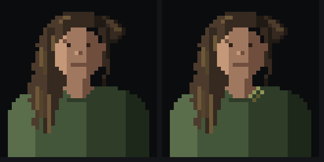
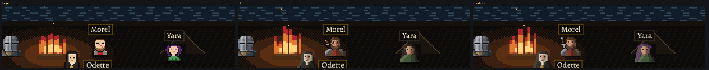
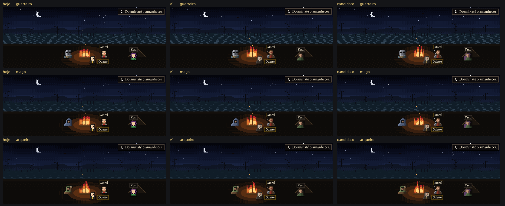
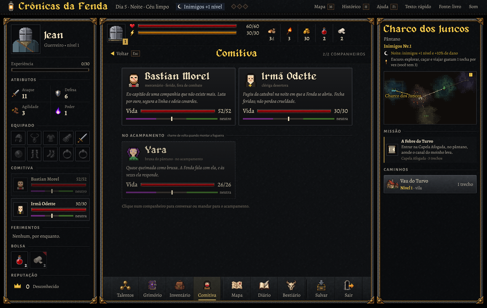
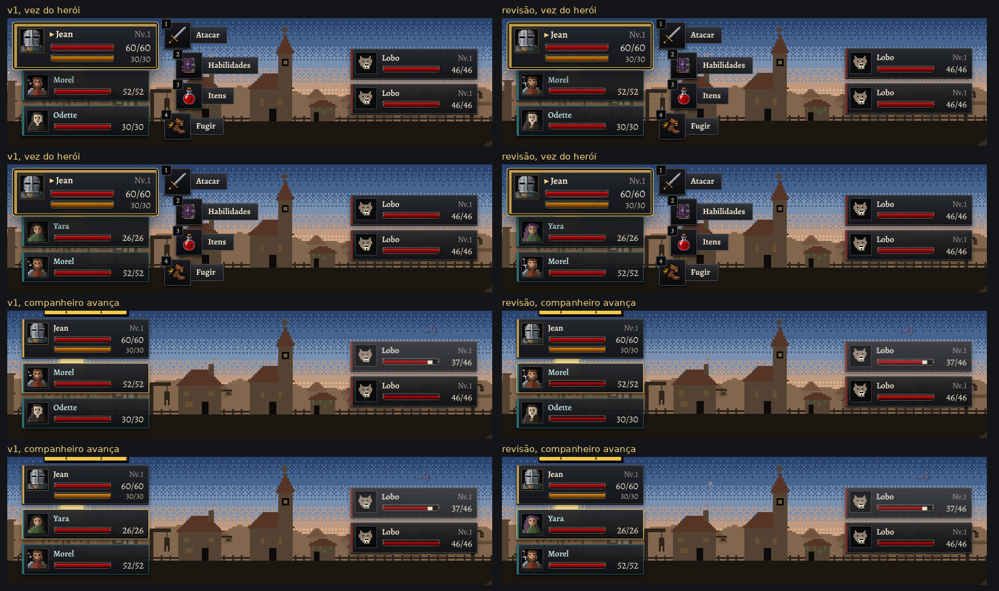

Segunda versão dos candidatos (arte-teste.js), ao lado da primeira (comitiva-v1.js), desenhados em código
pelo método e no enquadramento dos heróis: o busto de 40×40, o recorte da cabeça (24×24, a 48 px: a tela da Comitiva, o
cartão da reação, a faixa de quem chega) e a versão de 16×16 (32 px: o painel e a carta da luta; 16 px: a figura da
fogueira). Mudou só o pedido: o cabelo da Yara (forma e cor), a cruz da Odette, a cicatriz e a espada do Morel, e saíram os pixels
soltos (os remendos e rebites do Morel, as manchas da Odette). Em produção eles seguem com os sprites de sempre.
Ampliados: primeira versão × revisão
Morel, v1Morel, revisão
a cicatriz: um corte na diagonal, da linha do cabelo até a barba, cortando a sobrancelha e o nariz, no tom da pele repuxada (antes, uma faixa vermelha de orelha a orelha)
a espada: pomo, empunhadura enfaixada, guarda e a lâmina sumindo atrás da ombreira, num eixo só
sem os remendos e rebites soltos
carta v1, ×8carta revisão, ×8 (a cicatriz em três pixels)
Odette, v1Odette, revisão
a pequena cruz amarela do sprite, em amarelo envelhecido
o chamuscado: a borda do véu roída num ombro, uma forma só (antes, manchas soltas)
sem o rosário (num dos caminhos ela o entrega ao herói)
carta v1, ×8carta revisão, ×8
Yara, v1Yara, revisão
o cabelo assimétrico: solto e irregular de um lado, com mechas grudadas pela lama ("cabelo sujo de lama"); do outro, atrás da orelha e preso num nó
o cabelo roxo apagado, como no sprite antigo: a cor vira o traço dela; a lama continua barrenta por cima
os olhos castanhos; nada de brilho, joia ou chapéu
carta v1, ×8carta revisão, ×8

a erva na gola, testada e descartada: a 40×40 lê como broche (pareceria joia) e some a 48 e 32 px
Nos tamanhos reais (v1 e revisão), com os heróis aprovados
No jogo: a fogueira (hoje × v1 × revisão), com cada herói

as figuras de perto (×3), com o Guerreiro: a Yara, longe do fogo, é a que pedia mais contraste

a cena inteira, no tamanho do jogo, com o Guerreiro, o Mago e o Arqueiro
No jogo: o painel e a tela da Comitiva (Morel ferido)

hojerevisão
No jogo: a carta da luta (v1 × revisão)

na vez do herói e no momento em que o companheiro avança para agir (o companheiro não tem vez própria: a carta dele avança com a borda acesa, sem ampliar)